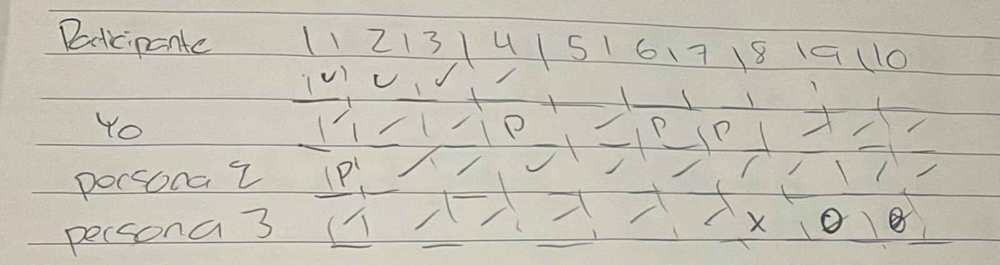
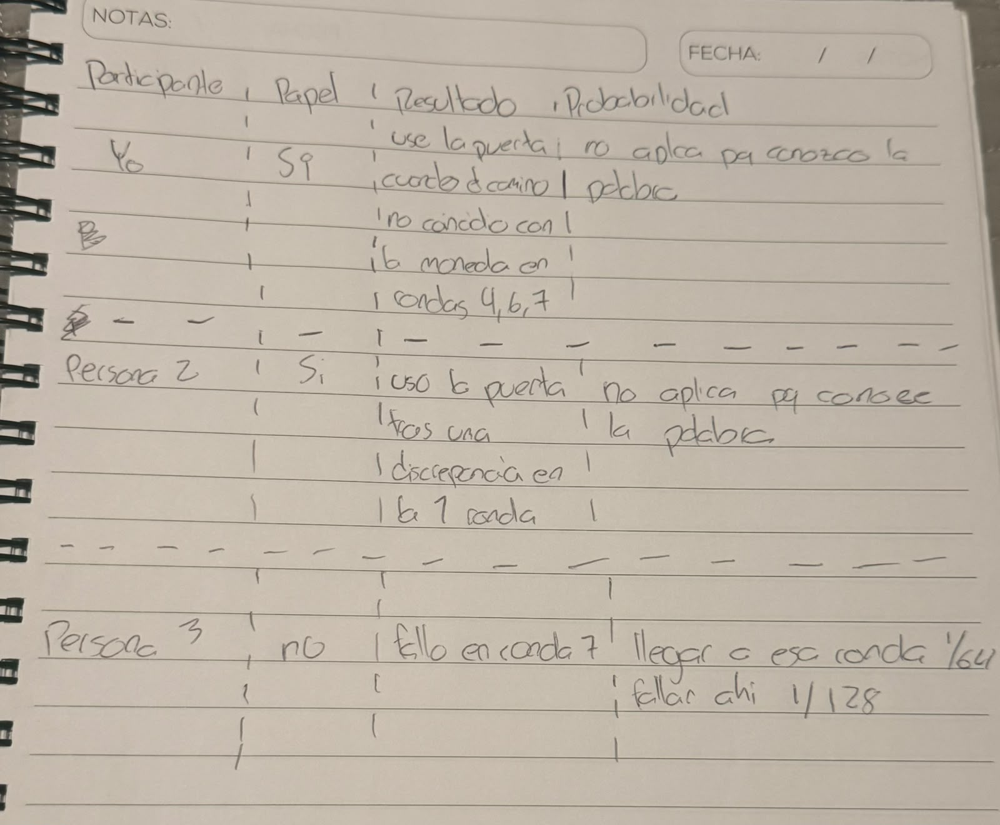
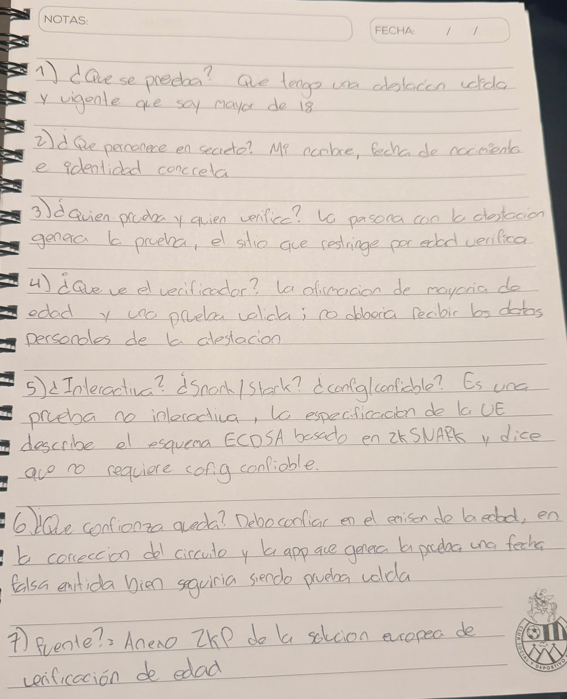

Yo
Completé 10/10. En las rondas 4, 6 y 7 mi camino inicial no coincidió con la moneda, así que usé la puerta para salir por el lado pedido.
Hice la cueva con dos personas que conozco y una moneda real. Después analicé el caso 1 que me asignó el profesor: verificación de edad con una prueba de conocimiento cero.
Completé 10/10. En las rondas 4, 6 y 7 mi camino inicial no coincidió con la moneda, así que usé la puerta para salir por el lado pedido.
Observé que Persona 2 completó 10/10. En la ronda 1 su camino inicial no coincidió con la moneda, así que usó la puerta.
Observé que Persona 3, sin la palabra, superó seis retos y falló en la ronda 7.
Una persona sin la palabra solo acierta por azar cuando su camino inicial coincide con el reto. Para diez rondas, la probabilidad de pasar todas es 1/1024, aproximadamente 0.098 %. Llegar a la ronda 7 tiene probabilidad 1/64; fallar exactamente allí, 1/128.
Mis marcas de las rondas SÍ eran discrepancias iniciales, no fallos: la puerta permitió completar los retos. Las anotaciones después del fallo de Persona 3 en la ronda 7 no las conté como retos superados.

También registré los papeles de los tres participantes y el resultado de la prueba en una tabla breve.

Una ficha es una tabla de siete preguntas y respuestas. Esta es mi ficha para la verificación de edad de la UE; el mecanismo es extranjero y no lo presento como ley guatemalteca.
| # | Pregunta | Mi respuesta |
|---|---|---|
| 1 | ¿Qué pruebo? | Que tengo una atestación válida y vigente que afirma que soy mayor de 18. |
| 2 | ¿Qué oculto? | Mi nombre, mi fecha de nacimiento y mi identidad concreta. |
| 3 | ¿Quién prueba y quién verifica? | La persona con la atestación genera la prueba; el sitio que exige una edad mínima la verifica. |
| 4 | ¿Qué ve el verificador? | Ve la afirmación de mayoría de edad y una prueba válida, sin recibir la fecha exacta. |
| 5 | ¿Qué tipo de prueba es? | No interactiva, basada en zkSNARK; la solución documentada no necesita configuración confiable. |
| 6 | ¿Qué confianza queda? | Sigo confiando en el emisor de la edad, el circuito y la app que genera la prueba. |
| 7 | ¿Cuál es mi fuente? | Anexo ZKP de la solución europea de verificación de edad ↗ |
Si el emisor certificó una edad falsa, la prueba podría verificar correctamente una afirmación que no corresponde al mundo real. También revisaría que el circuito compruebe la firma y la vigencia de la atestación.
Mi ficha escrita a mano aparece justo abajo.

Al hacer la cueva con dos personas, comprobé que quienes teníamos «SÍ» completamos 10/10 usando la puerta cuando hizo falta. Persona 3 llegó por azar hasta la ronda 7. Repetir retos reduce la posibilidad de engañar al verificador sin revelar la palabra.
En el caso de edad comprobé que ZK no elimina la confianza en el emisor ni en el circuito. Para Pactrail propondría demostrar que se cumplieron condiciones de liberación sin guardar todos los documentos, después de definir quién certifica esas condiciones.